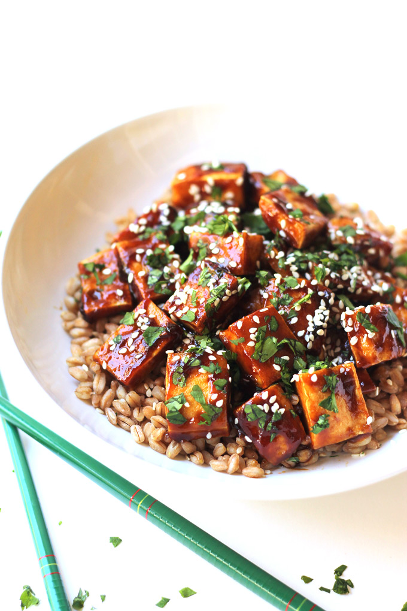

Hoisin Tofu Stirfry
Home

Description
This sauce is a homemade recipe that came to fruition after finding a recipe that I wanted to try, but I realized I didn't have the ingredients I needed for the sauce! So, I slapped together the substitutes I had in the fridge and viola, new recipe achieved! This is best served over steamed rice, but I like using quinoa as well. Sweet, spicy and most importantly, tasty!
Ingredients
- 1 block extra firm tofu, pressed
- 1 red bell pepper, sliced into chunks
- 1-2 shallots, sliced
- 2-3 cloves of garlic, minced
- 1 thumb ginger, minced
- 3 tbsp hoisin
- 2 tbsp soy sauce
- 1-2 tbsp gochujang
- 1 tbsp white wine vinegar
- 1 tbsp mirin
- Red pepper flakes for desired spice level
- Green onions, chopped
- Option to add any other veggies you have on hand
Steps
- Heat a nonstick skillet over medium heat and chop tofu into bite size pieces
- Add good amount of oil and fry tofu. You need enough oil for a shallow fry. If frying in batches, add oil between each batch. Place tofu on a wire rack when golden brown on all sides
- While tofu is cooking, mix sauce ingredientss until well blended - hoisin, soy sauce, gochujang, white wine vinegar, mirin, and red pepper flakes
- Once tofu is done, remove nonstick skillet and add wok to the burner over medium-high heat with a drizzle of oil
- Add peppers and shallots and cook 3-4 minutes, stirring often tto prevent burning
- Add ginger and garlic, stirring constantly for 30 seconds or until fragrant
- Add sauce and tofu to the pan. Toss to coat tofu and cook a few more minutes until sauce thickens
- Serve over rice, and garnish with green onions. I also like to layer a handful of spinach between the rice and tofu, and sprinkle everything with sesame seeds